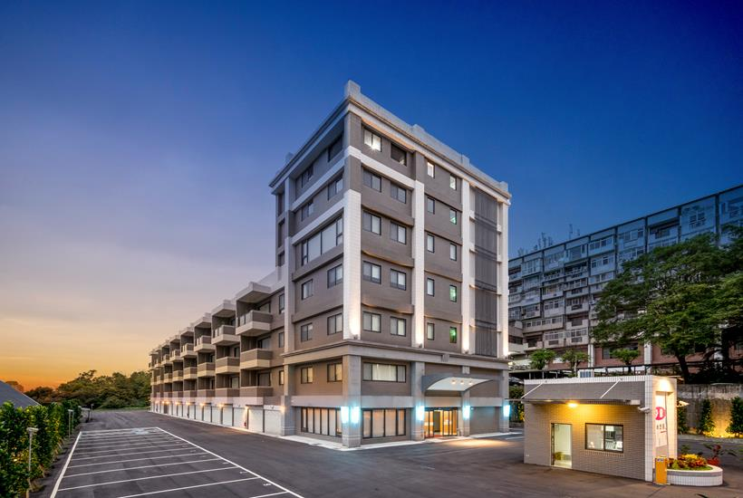
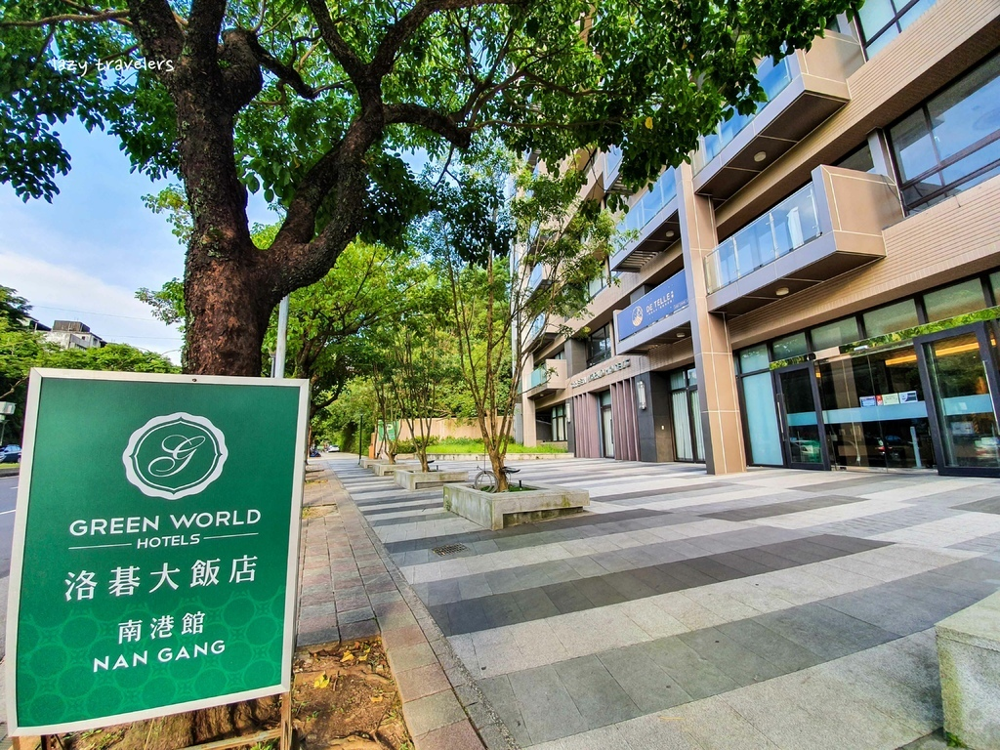
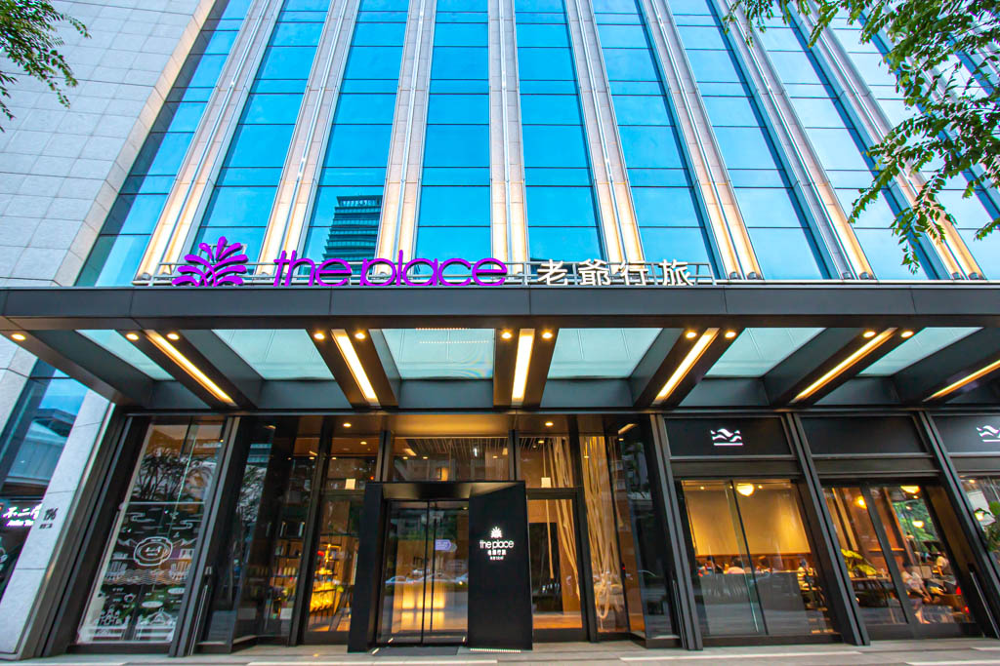

富信大飯店
-
交通
美食
捷運：搭乘捷運板南線至汐止站下車，從出口一出站後步行約15分鐘即可到達。
公車：搭乘公車紅5、262、276、287、611、672、673、915、938、942、943、946、948、950、951、952、953、955、958、959、981等路線至「汐止火車站」或「捷運汐止站」站下車，步行約15分鐘即可到達。
開車：從台北市中心出發，沿著快速道路五號、國道三號或國道五號行駛，於「汐止交流道」下交流道，再沿著汐萬路直行至新台五路一段，即可抵達飯店。
高鐵/火車：搭乘高鐵至台北站或搭乘火車至台北火車站，轉乘捷運板南線至汐止站下車，從出口一出站後步行約15分鐘即可到達。
天際中餐廳：以中式料理為主打，提供精緻的廣東、湘菜等菜式，還有創意的點心和豐盛的自助餐。餐廳氛圍高雅、燈光柔和，適合與家人、朋友或商業夥伴共享美食。
富廊西餐廳：提供西式料理，主打美式風格的經典料理，例如牛排、鮭魚、漢堡等，還有精選的紅酒和咖啡供應。餐廳裝潢華麗，典雅氣氛，適合與情人、朋友或商業夥伴共度浪漫晚餐。
少爺時尚旅館
-
交通
捷運：搭乘板南線（藍線）至汐止站，出站後步行約10分鐘即可到達。 公車：搭乘藍25、藍27、藍30、藍33、藍36、藍37、藍38、藍39、藍55、藍56、藍57、685、686、811、812、813、814、915、916、917、961、962、965等公車至「捷運汐止站」或「汐止火車站」下車，步行約10分鐘即可到達。 開車：從台北市中心開車約20分鐘，可由中山高速公路下汐止交流道後，行駛中興路即可到達。
美食安平豆花：以細緻的豆花和鮮甜的紅豆為特色，是當地知名的小吃。 青山冰果店：這家店有著濃郁的古早味，特別是他們的芋頭冰，口感極佳。 無老鍋：提供新鮮的海鮮和多樣化的食材，適合與家人或朋友一起享用。 瑞芳蔥油餅：這是一種台灣傳統的小吃，以蔥油餅皮薄餡多為特色，一口咬下就會讓人回味無窮。 羅東夜市：雖然不在汐止，但是距離不遠，是台灣著名的夜市之一，提供各種道地的台灣小吃，絕對值得一去。
- 
薇星旅館
-
交通
捷運：搭乘板南線（藍線）至汐止站，出站後轉搭市民巴士17號或18號，或步 行約15分鐘即可到達。 公車：搭乘17號、18號、35號、52號、306號、307號、666號、903號等公車至「薇新國宅」站下車，步行約3分鐘即可到達。 開車：從台北市中心開車約20分鐘，可由中山高速公路下汐止交流道後，行駛汐萬路至薇新國宅即可到達。
美食阿宗麵線：以細麵線和特製醬汁為特色，是當地知名的小吃。 阿堂鹹粥：以糯米、豬肉、花生等為主要食材，口感濃郁香醇。 士林夜市：距離汐止較遠，但是是台灣著名的夜市之一，提供各種道地的台灣小吃，絕對值得一去。 全家便利商店：薇星旅館附近有多家全家便利商店，提供各種便利食品和小吃，方便又美味。 丹丹漢堡：提供多種口味的漢堡和薯條，適合快速輕鬆地享用美食。
-

洛碁大飯店-南港館
-
交通
捷運：搭乘文湖線（紅線）至南港展覽館站，出站後步行約10分鐘即可到達。 公車：搭乘205、212、276、306、620、645、849、南港01等公車至南港展覽館站下車，步行約10分鐘即可到達。 開車：從台北市中心開車約15分鐘，可由市民大道下南港交流道後，行駛環東大道至經貿二路即可到達。
美食麻辣火鍋：南港區有許多知名的麻辣火鍋餐廳，如蜀大侠、小南國、涮著呢等等，可以品嚐到道地的川式風味。 台灣小吃：南港區也有不少小吃攤販，如永和豆漿、青年市場、南港夜市等，提供各式各樣的台灣小吃，值得一試。 韓式料理：南港區也有不少韓式料理餐廳，如大長今、韓食堂等，提供道地的韓式美食，絕對讓人回味無窮。 滷味：南港區有許多滷味店，如大雄滷味、青洲滷味等，提供豐富的滷味選擇，口味也相當地道。
- 
南港老爺行旅
-
交通
搭乘捷運：搭乘文湖線（紅線）至南港展覽館站，出站後步行約10分鐘即可到達。 搭乘公車：搭乘205、212、276、306、620、645、849、南港01等公車至南港展覽館站下車，步行約10分鐘即可到達。 駕車：從台北市中心開車約15分鐘，可由市民大道下南港交流道後，行駛環東大道至經貿二路即可到達。
美食麻辣火鍋：南港區有許多知名的麻辣火鍋餐廳，如蜀大侠、小南國、涮著呢等等，可以品嚐到道地的川式風味。 台灣小吃：南港區也有不少小吃攤販，如永和豆漿、青年市場、南港夜市等，提供各式各樣的台灣小吃，值得一試。 韓式料理：南港區也有不少韓式料理餐廳，如大長今、韓食堂等，提供道地的韓式美食，絕對讓人回味無窮。 滷味：南港區有許多滷味店，如大雄滷味、青洲滷味等，提供豐富的滷味選擇，口味也相當地道。 茶飲店：南港區也有許多知名的茶飲店，如50嵐、迷客夏、清心福全等，提供各種口味的飲品，是消暑解渴的好去處。
- 


.jpg) 旅遊
旅遊
.jpg) 美食
美食
.jpg) 住宿
住宿